<!DOCTYPE html>
<html lang="pt-PT">
<head>
    <meta charset="UTF-8">
    <meta name="viewport" content="width=device-width, initial-scale=1.0">
    <title>ECOBXD - A Natureza da Baixada</title>
    <!-- Tailwind CSS — embutido inline para funcionamento OFFLINE -->
    <style>
        /* === TAILWIND RESET + PREFLIGHT === */
        *,::after,::before{box-sizing:border-box;border-width:0;border-style:solid;border-color:#e5e7eb}
        html{line-height:1.5;-webkit-text-size-adjust:100%;tab-size:4;font-family:ui-sans-serif,system-ui,-apple-system,BlinkMacSystemFont,"Segoe UI",Roboto,"Helvetica Neue",Arial,"Noto Sans",sans-serif}
        body{margin:0;line-height:inherit}
        h1,h2,h3,h4,h5,h6{font-size:inherit;font-weight:inherit}
        a{color:inherit;text-decoration:inherit}
        b,strong{font-weight:bolder}
        button,input,optgroup,select,textarea{font-family:inherit;font-size:100%;font-weight:inherit;line-height:inherit;color:inherit;margin:0;padding:0}
        button,select{text-transform:none}
        button,[type=button],[type=reset],[type=submit]{-webkit-appearance:button;background-color:transparent;background-image:none}
        summary{display:list-item}
        blockquote,dl,dd,h1,h2,h3,h4,h5,h6,hr,figure,p,pre{margin:0}
        fieldset{margin:0;padding:0}
        legend{padding:0}
        ol,ul,menu{list-style:none;margin:0;padding:0}
        textarea{resize:vertical}
        input::placeholder,textarea::placeholder{opacity:1;color:#9ca3af}
        button,[role=button]{cursor:pointer}
        :disabled{cursor:default}
        img,svg,video,canvas,audio,iframe,embed,object{display:block;vertical-align:middle}
        img,video{max-width:100%;height:auto}
        [hidden]{display:none}

        /* === TAILWIND UTILITIES === */
        .block{display:block}.flex{display:flex}.grid{display:grid}.hidden{display:none}.inline-block{display:inline-block}
        .items-center{align-items:center}.items-start{align-items:flex-start}
        .justify-center{justify-content:center}.justify-between{justify-content:space-between}.justify-end{justify-content:flex-end}
        .flex-col{flex-direction:column}.flex-1{flex:1 1 0%}.flex-wrap{flex-wrap:wrap}
        .min-h-screen{min-height:100vh}.h-full{height:100%}.w-full{width:100%}.h-10{height:2.5rem}.w-10{width:2.5rem}.h-2{height:0.5rem}
        .h-44{height:11rem}.h-52{height:13rem}.h-56{height:14rem}
        .max-w-md{max-width:28rem}.max-w-2xl{max-width:42rem}.max-w-4xl{max-width:56rem}
        .mx-auto{margin-left:auto;margin-right:auto}
        .overflow-hidden{overflow:hidden}.overflow-x-hidden{overflow-x:hidden}.overflow-y-auto{overflow-y:auto}
        .relative{position:relative}.absolute{position:absolute}.fixed{position:fixed}.sticky{position:sticky}
        .inset-0{inset:0}.top-0{top:0}.top-2{top:0.5rem}.top-10{top:2.5rem}.bottom-0{bottom:0}.bottom-10{bottom:2.5rem}
        .left-0{left:0}.left-10{left:2.5rem}.right-0{right:0}.right-2{right:0.5rem}.right-10{right:2.5rem}
        .z-10{z-index:10}.z-20{z-index:20}
        .col-span-2{grid-column:span 2/span 2}
        .grid-cols-1{grid-template-columns:repeat(1,minmax(0,1fr))}
        .grid-cols-2{grid-template-columns:repeat(2,minmax(0,1fr))}
        .grid-cols-3{grid-template-columns:repeat(3,minmax(0,1fr))}
        .grid-cols-4{grid-template-columns:repeat(4,minmax(0,1fr))}
        .object-cover{object-fit:cover}.object-contain{object-fit:contain}
        .p-2{padding:0.5rem}.p-3{padding:0.75rem}.p-4{padding:1rem}.p-6{padding:1.5rem}.p-8{padding:2rem}
        .px-3{padding-left:0.75rem;padding-right:0.75rem}.px-4{padding-left:1rem;padding-right:1rem}
        .py-1{padding-top:0.25rem;padding-bottom:0.25rem}.py-3{padding-top:0.75rem;padding-bottom:0.75rem}
        .py-4{padding-top:1rem;padding-bottom:1rem}.py-8{padding-top:2rem;padding-bottom:2rem}
        .pb-2{padding-bottom:0.5rem}.pb-8{padding-bottom:2rem}.pb-10{padding-bottom:2.5rem}.pb-20{padding-bottom:5rem}
        .m-0{margin:0}
        .mt-0\.5{margin-top:0.125rem}.mt-1{margin-top:0.25rem}.mt-2{margin-top:0.5rem}.mt-3{margin-top:0.75rem}.mt-4{margin-top:1rem}.mt-8{margin-top:2rem}
        .mb-1{margin-bottom:0.25rem}.mb-2{margin-bottom:0.5rem}.mb-3{margin-bottom:0.75rem}.mb-4{margin-bottom:1rem}.mb-6{margin-bottom:1.5rem}.mb-8{margin-bottom:2rem}
        .mr-4{margin-right:1rem}
        .gap-1{gap:0.25rem}.gap-2{gap:0.5rem}.gap-3{gap:0.75rem}.gap-4{gap:1rem}.gap-8{gap:2rem}
        .space-y-2>*+*{margin-top:0.5rem}.space-y-3>*+*{margin-top:0.75rem}.space-y-4>*+*{margin-top:1rem}.space-y-6>*+*{margin-top:1.5rem}
        .text-xs{font-size:0.75rem;line-height:1rem}.text-sm{font-size:0.875rem;line-height:1.25rem}
        .text-base{font-size:1rem;line-height:1.5rem}.text-lg{font-size:1.125rem;line-height:1.75rem}
        .text-xl{font-size:1.25rem;line-height:1.75rem}.text-2xl{font-size:1.5rem;line-height:2rem}
        .text-3xl{font-size:1.875rem;line-height:2.25rem}.text-4xl{font-size:2.25rem;line-height:2.5rem}
        .text-5xl{font-size:3rem;line-height:1}
        .font-medium{font-weight:500}.font-semibold{font-weight:600}.font-bold{font-weight:700}
        .font-extrabold{font-weight:800}.font-black{font-weight:900}
        .italic{font-style:italic}
        .text-center{text-align:center}.text-left{text-align:left}.text-right{text-align:right}
        .tracking-tight{letter-spacing:-0.025em}.uppercase{text-transform:uppercase}
        .antialiased{-webkit-font-smoothing:antialiased;-moz-osx-font-smoothing:grayscale}
        .drop-shadow{filter:drop-shadow(0 1px 2px rgba(0,0,0,.1)) drop-shadow(0 1px 1px rgba(0,0,0,.06))}
        .font-sans{font-family:ui-sans-serif,system-ui,-apple-system,BlinkMacSystemFont,"Segoe UI",Roboto,sans-serif}
        .text-white{color:#fff}.text-black{color:#000}
        .text-gray-100{color:#f3f4f6}.text-gray-200{color:#e5e7eb}.text-gray-300{color:#d1d5db}
        .text-gray-400{color:#9ca3af}.text-gray-500{color:#6b7280}.text-gray-600{color:#4b5563}
        .text-gray-700{color:#374151}.text-gray-800{color:#1f2937}.text-gray-900{color:#111827}
        .text-green-200{color:#bbf7d0}.text-green-400{color:#4ade80}.text-green-500{color:#22c55e}
        .text-green-600{color:#16a34a}.text-green-700{color:#15803d}.text-green-800{color:#166534}
        .text-orange-300{color:#fdba74}.text-orange-400{color:#fb923c}.text-orange-500{color:#f97316}
        .text-orange-600{color:#ea580c}.text-orange-800{color:#9a3412}
        .text-blue-300{color:#93c5fd}.text-blue-400{color:#60a5fa}.text-blue-600{color:#2563eb}.text-blue-800{color:#1e40af}
        .text-teal-400{color:#2dd4bf}.text-teal-600{color:#0d9488}.text-teal-800{color:#115e59}
        .text-red-400{color:#f87171}.text-red-600{color:#dc2626}.text-red-800{color:#991b1b}
        .text-emerald-400{color:#34d399}
        .text-zinc-400{color:#a1a1aa}.text-zinc-500{color:#71717a}.text-zinc-600{color:#52525b}
        .bg-black{background-color:#000}.bg-white{background-color:#fff}
        .bg-gray-100{background-color:#f3f4f6}.bg-gray-800{background-color:#1f2937}
        .bg-green-100{background-color:#dcfce7}.bg-green-500{background-color:#22c55e}
        .bg-green-600{background-color:#16a34a}.bg-green-700{background-color:#15803d}
        .bg-orange-100{background-color:#ffedd5}.bg-orange-500{background-color:#f97316}
        .bg-blue-100{background-color:#dbeafe}.bg-blue-500{background-color:#3b82f6}
        .bg-teal-100{background-color:#ccfbf1}.bg-teal-500{background-color:#14b8a6}
        .bg-red-100{background-color:#fee2e2}.bg-red-500{background-color:#ef4444}
        .bg-zinc-700{background-color:#3f3f46}.bg-zinc-800{background-color:#27272a}.bg-zinc-900{background-color:#18181b}
        .bg-emerald-500{background-color:#10b981}.bg-emerald-700{background-color:#047857}
        .bg-white\/20{background-color:rgba(255,255,255,0.2)}
        .hover\:bg-green-700:hover{background-color:#15803d}.hover\:bg-green-600:hover{background-color:#16a34a}
        .hover\:bg-orange-600:hover{background-color:#ea580c}
        .hover\:bg-gray-100:hover{background-color:#f3f4f6}.hover\:bg-gray-900:hover{background-color:#111827}
        .hover\:bg-zinc-600:hover{background-color:#52525b}.hover\:bg-emerald-600:hover{background-color:#059669}
        .hover\:text-green-200:hover{color:#bbf7d0}.hover\:text-green-600:hover{color:#16a34a}
        .hover\:text-gray-300:hover{color:#d1d5db}.hover\:text-gray-800:hover{color:#1f2937}
        .hover\:border-zinc-500:hover{border-color:#71717a}
        .hover\:shadow-md:hover{box-shadow:0 4px 6px -1px rgba(0,0,0,.1),0 2px 4px -2px rgba(0,0,0,.1)}
        .border{border-width:1px}.border-2{border-width:2px}.border-t-4{border-top-width:4px}.border-b{border-bottom-width:1px}
        .border-gray-300{border-color:#d1d5db}
        .border-green-400{border-color:#4ade80}.border-green-500{border-color:#22c55e}
        .border-orange-400{border-color:#fb923c}.border-orange-500{border-color:#f97316}
        .border-teal-400{border-color:#2dd4bf}
        .border-red-400{border-color:#f87171}
        .border-zinc-500{border-color:#71717a}.border-zinc-600{border-color:#52525b}.border-zinc-700{border-color:#3f3f46}
        .border-none{border-style:none}
        .rounded{border-radius:.25rem}.rounded-lg{border-radius:.5rem}.rounded-xl{border-radius:.75rem}
        .rounded-2xl{border-radius:1rem}.rounded-3xl{border-radius:1.5rem}.rounded-full{border-radius:9999px}
        .outline-none{outline:2px solid transparent;outline-offset:2px}
        .focus\:ring-2:focus{box-shadow:0 0 0 2px rgba(22,163,74,.5)}
        .shadow-sm{box-shadow:0 1px 2px 0 rgba(0,0,0,.05)}
        .shadow-md{box-shadow:0 4px 6px -1px rgba(0,0,0,.1),0 2px 4px -2px rgba(0,0,0,.1)}
        .shadow-lg{box-shadow:0 10px 15px -3px rgba(0,0,0,.1),0 4px 6px -4px rgba(0,0,0,.1)}
        .shadow-xl{box-shadow:0 20px 25px -5px rgba(0,0,0,.1),0 8px 10px -6px rgba(0,0,0,.1)}
        .shadow-2xl{box-shadow:0 25px 50px -12px rgba(0,0,0,.25)}
        .opacity-10{opacity:.1}.opacity-70{opacity:.7}
        .bg-gradient-to-t{background-image:linear-gradient(to top,var(--tw-gradient-stops))}
        .from-black\/70{--tw-gradient-from:rgba(0,0,0,.7);--tw-gradient-stops:var(--tw-gradient-from),var(--tw-gradient-to,rgba(0,0,0,0))}
        .from-black\/75{--tw-gradient-from:rgba(0,0,0,.75);--tw-gradient-stops:var(--tw-gradient-from),var(--tw-gradient-to,rgba(0,0,0,0))}
        .from-black\/80{--tw-gradient-from:rgba(0,0,0,.8);--tw-gradient-stops:var(--tw-gradient-from),var(--tw-gradient-to,rgba(0,0,0,0))}
        .to-transparent{--tw-gradient-to:transparent}
        .transition-all{transition-property:all;transition-timing-function:cubic-bezier(.4,0,.2,1);transition-duration:150ms}
        .transition-colors{transition-property:color,background-color,border-color;transition-timing-function:cubic-bezier(.4,0,.2,1);transition-duration:150ms}
        .duration-300{transition-duration:300ms}
        .backdrop-blur-sm{backdrop-filter:blur(4px)}
        .cursor-pointer{cursor:pointer}.cursor-not-allowed{cursor:not-allowed}
        .whitespace-nowrap{white-space:nowrap}.pointer-events-none{pointer-events:none}
        .bg-orange-500\/20{background-color:rgba(249,115,22,.2)}
        .bg-orange-500\/30{background-color:rgba(249,115,22,.3)}
        .border-orange-500\/30{border-color:rgba(249,115,22,.3)}.border-orange-500\/50{border-color:rgba(249,115,22,.5)}
        .border-emerald-500{border-color:#10b981}
        .text-green-500\/10{color:rgba(34,197,94,.1)}.text-blue-500\/10{color:rgba(59,130,246,.1)}
        .text-orange-300\/80{color:rgba(253,186,116,.8)}.text-white\/80{color:rgba(255,255,255,.8)}
        .hover\:text-green-400:hover{color:#4ade80}.hover\:text-blue-400:hover{color:#60a5fa}
        .hover\:text-red-400:hover{color:#f87171}
        .hover\:border-orange-500:hover{border-color:#f97316}
        @media (min-width:768px){
            .md\:grid-cols-2{grid-template-columns:repeat(2,minmax(0,1fr))}
            .md\:grid-cols-4{grid-template-columns:repeat(4,minmax(0,1fr))}
            .md\:col-span-2{grid-column:span 2/span 2}
        }
    </style>
    <style>
        @keyframes float {
            0%, 100% { transform: translateY(0px) rotate(0deg); }
            33%       { transform: translateY(-7px) rotate(-3deg); }
            66%       { transform: translateY(-4px) rotate(3deg); }
        }
        .icon-float {
            animation: float 3s ease-in-out infinite;
        }
        .icon-float:hover {
            animation-play-state: paused;
            transform: scale(1.15);
            transition: transform 0.2s ease;
        }
        @keyframes pulse-text {
            0%, 100% { opacity: 1; transform: scale(1); }
            50%       { opacity: 0.4; transform: scale(0.97); }
        }
        @keyframes fade-in-up {
            from { opacity: 0; transform: translateY(20px); }
            to   { opacity: 1; transform: translateY(0); }
        }
        .splash-cta {
            animation: pulse-text 1.6s ease-in-out infinite;
        }
        .splash-cta-enter {
            animation: fade-in-up 0.7s ease forwards;
        }
        @keyframes img-pulse {
            0%, 100% { transform: scale(1); filter: brightness(1); }
            50%       { transform: scale(1.018); filter: brightness(1.08); }
        }
        .img-card {
            cursor: pointer;
            animation: img-pulse 3.5s ease-in-out infinite;
            transition: transform 0.25s ease, box-shadow 0.25s ease;
        }
        .img-card:hover {
            animation-play-state: paused;
            transform: scale(1.04) !important;
            box-shadow: 0 8px 32px rgba(0,0,0,0.45);
        }
        @keyframes modal-in {
            from { opacity: 0; transform: scale(0.92); }
            to   { opacity: 1; transform: scale(1); }
        }
        .modal-enter { animation: modal-in 0.3s ease forwards; }
    </style>
</head>
<body class="bg-black text-gray-100 font-sans antialiased overflow-x-hidden">
    <div id="root" class="min-h-screen"></div>

    <script>
        // --- DADOS E CONTEÚDOS ---
        const CONTEUDOS = {
            flora: {
                title: 'Flora da Baixada',
                icon: 'fa-leaf',
                color: 'text-green-600',
                barColor: 'bg-green-500',
                borderColor: 'border-green-400',
                bgColor: 'bg-green-100',
                content: `
                    <div class="space-y-6 text-gray-700">
                        <h3 class="font-bold text-xl text-green-800">Principais Reservas e Parques Florestais</h3>
                        <p>A Baixada Fluminense abriga importantes fragmentos de Mata Atlântica. Destacam-se a <strong>Reserva Biológica do Tinguá</strong> (Nova Iguaçu) e o <strong>Parque Natural Municipal de Nova Iguaçu</strong> (Parque do Vulcão), além da APA Guandu-Jacatirão.</p>
                        <div class="w-full rounded-xl overflow-hidden shadow-md relative img-card" onclick="openImageModal('parque_municipal_nova_iguacu')">
                            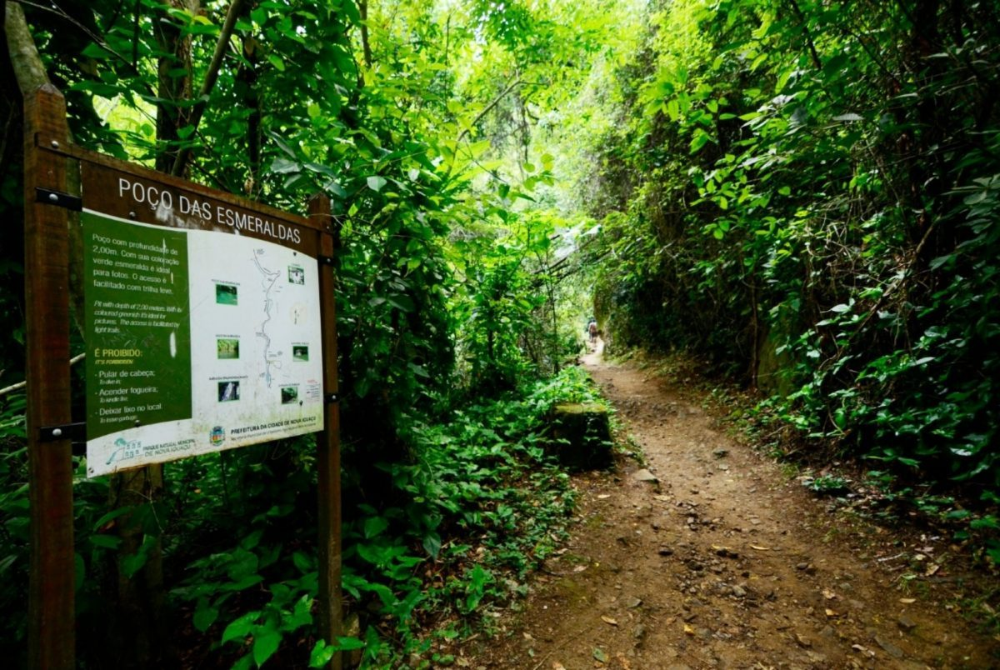
                            <div class="absolute bottom-0 left-0 right-0 bg-gradient-to-t from-black/70 to-transparent px-4 py-3">
                                <span class="text-white font-bold text-base drop-shadow">🌿 Parque Natural Municipal de Nova Iguaçu</span>
                                <p class="text-white/80 text-xs mt-0.5">Reserva de Mata Atlântica — Parque do Vulcão</p>
                            </div>
                        </div>

                        <h3 class="font-bold text-xl text-green-800">Principais Espécimes Nativas</h3>
                        <p>Entre a rica flora local, encontramos árvores imponentes como o Jequitibá-rosa, Ipê-amarelo, Quaresmeira, Pau-brasil e diversas espécies de bromélias e orquídeas nativas que compõem o sub-bosque.</p>

                        <div class="grid grid-cols-1 gap-4">
                            <div class="rounded-xl overflow-hidden shadow-md relative img-card" onclick="openImageModal('jequitiba_rosa')">
                                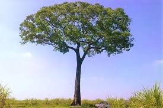
                                <div class="absolute bottom-0 left-0 right-0 bg-gradient-to-t from-black/70 to-transparent px-4 py-3">
                                    <span class="text-white font-bold text-sm drop-shadow">🌳 Jequitibá-rosa</span>
                                    <p class="text-white/80 text-xs">Uma das maiores árvores da Mata Atlântica</p>
                                </div>
                            </div>

                            <div class="rounded-xl overflow-hidden shadow-md relative img-card" onclick="openImageModal('ipe_amarelo')">
                                
                                <div class="absolute bottom-0 left-0 right-0 bg-gradient-to-t from-black/70 to-transparent px-4 py-3">
                                    <span class="text-white font-bold text-sm drop-shadow">🌼 Ipê-amarelo</span>
                                    <p class="text-white/80 text-xs">Árvore símbolo do Brasil</p>
                                </div>
                            </div>

                            <div class="rounded-xl overflow-hidden shadow-md relative img-card" onclick="openImageModal('quaresmeira')">
                                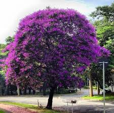
                                <div class="absolute bottom-0 left-0 right-0 bg-gradient-to-t from-black/70 to-transparent px-4 py-3">
                                    <span class="text-white font-bold text-sm drop-shadow">🌸 Quaresmeira</span>
                                    <p class="text-white/80 text-xs">Flores roxas que ornamentam a Baixada</p>
                                </div>
                            </div>

                            <div class="rounded-xl overflow-hidden shadow-md relative img-card" onclick="openImageModal('pau_brasil')">
                                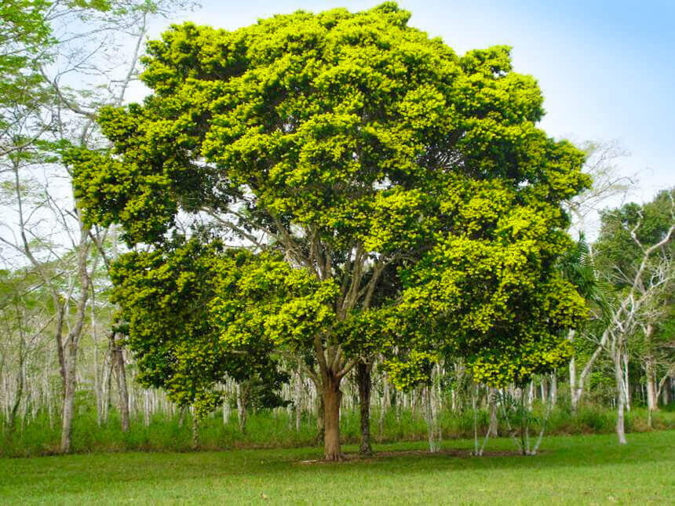
                                <div class="absolute bottom-0 left-0 right-0 bg-gradient-to-t from-black/70 to-transparent px-4 py-3">
                                    <span class="text-white font-bold text-sm drop-shadow">🪵 Pau-brasil</span>
                                    <p class="text-white/80 text-xs">Espécie que deu nome ao nosso país</p>
                                </div>
                            </div>
                        </div>

                        <h3 class="font-bold text-xl text-green-800">Ações de Preservação</h3>
                        <p>Ações incluem o reflorestamento de matas ciliares, fiscalização contra o desmatamento ilegal, projetos de educação ambiental nas escolas e a criação de corredores ecológicos para conectar fragmentos florestais isolados.</p>
                    </div>`
            },
            fauna: {
                title: 'Fauna Local',
                icon: 'fa-dove',
                color: 'text-orange-600',
                barColor: 'bg-orange-500',
                borderColor: 'border-orange-400',
                bgColor: 'bg-orange-100',
                content: `
                    <div class="space-y-6 text-gray-700">
                        <h3 class="font-bold text-xl text-orange-800">Principais Espécimes Nativas</h3>
                        <p>A fauna é rica e diversificada. Inclui aves como o Tiê-sangue e o Tucano-de-bico-preto; mamíferos como preguiças, pacas, tatus e, em áreas preservadas, onças-pardas; além de répteis como o Jacaré-de-papo-amarelo nos rios e pântanos.</p>

                        <div class="grid grid-cols-1 gap-4">
                            <div class="rounded-xl overflow-hidden shadow-md relative img-card" onclick="openImageModal('tiesangue')">
                                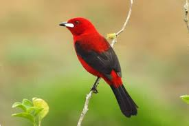
                                <div class="absolute bottom-0 left-0 right-0 bg-gradient-to-t from-black/70 to-transparent px-4 py-3">
                                    <span class="text-white font-bold text-sm drop-shadow">🐦 Tiê-sangue</span>
                                    <p class="text-white/80 text-xs">Ave nativa da Mata Atlântica</p>
                                </div>
                            </div>

                            <div class="rounded-xl overflow-hidden shadow-md relative img-card bg-zinc-900" onclick="openImageModal('tucano_bico_preto')">
                                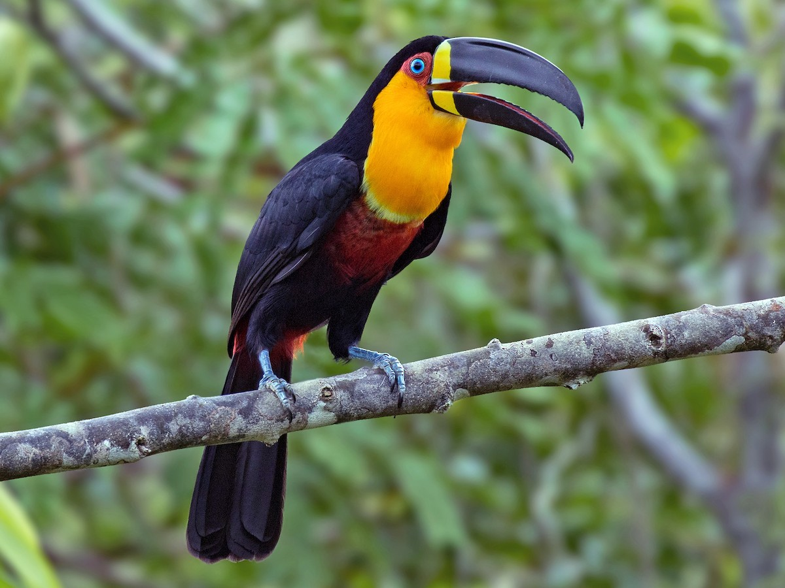
                                <div class="absolute bottom-0 left-0 right-0 bg-gradient-to-t from-black/80 to-transparent px-4 py-3">
                                    <span class="text-white font-bold text-sm drop-shadow">🦜 Tucano-de-bico-preto</span>
                                    <p class="text-white/80 text-xs">Símbolo da biodiversidade local</p>
                                </div>
                            </div>

                            <div class="rounded-xl overflow-hidden shadow-md relative img-card" onclick="openImageModal('jacare_papo_amarelo')">
                                
                                <div class="absolute bottom-0 left-0 right-0 bg-gradient-to-t from-black/70 to-transparent px-4 py-3">
                                    <span class="text-white font-bold text-sm drop-shadow">🦎 Jacaré-de-papo-amarelo</span>
                                    <p class="text-white/80 text-xs">Réptil nativo dos rios e pântanos da região</p>
                                </div>
                            </div>
                        </div>

                        <h3 class="font-bold text-xl text-orange-800">Desafios do Tráfico de Animais</h3>
                        <p>A Baixada Fluminense, infelizmente, possui rotas de tráfico de animais silvestres. Aves canoras e pequenos primatas são os mais capturados, causando um grave desequilíbrio ecológico e sofrimento aos animais.</p>

                        <h3 class="font-bold text-xl text-orange-800">Espécies Invasoras</h3>
                        <p>Espécies introduzidas competem por recursos com espécies nativas, tornando-se pragas ambientais e ameaças à biodiversidade local.</p>

                        <div class="grid grid-cols-1 gap-4">
                            <div class="rounded-xl overflow-hidden shadow-md relative img-card" onclick="openImageModal('caramujo_africano')">
                                
                                <div class="absolute bottom-0 left-0 right-0 bg-gradient-to-t from-black/70 to-transparent px-4 py-3">
                                    <span class="text-white font-bold text-sm drop-shadow">🐌 Caramujo-africano</span>
                                    <p class="text-white/80 text-xs">Espécie invasora — vetor de doenças</p>
                                </div>
                            </div>

                            <div class="rounded-xl overflow-hidden shadow-md relative img-card" onclick="openImageModal('sagui_tufo_branco')">
                                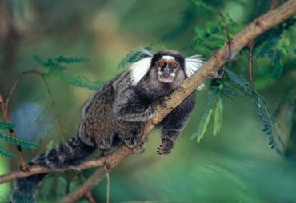
                                <div class="absolute bottom-0 left-0 right-0 bg-gradient-to-t from-black/70 to-transparent px-4 py-3">
                                    <span class="text-white font-bold text-sm drop-shadow">🐒 Sagui-de-tufo-branco</span>
                                    <p class="text-white/80 text-xs">Originário do Nordeste — compete com nativos</p>
                                </div>
                            </div>
                        </div>
                    </div>`
            },
            hidricos: {
                title: 'Recursos Hídricos',
                icon: 'fa-droplet',
                color: 'text-blue-600',
                barColor: 'bg-blue-500',
                borderColor: 'border-blue-400',
                bgColor: 'bg-blue-100',
                content: `
                    <div class="space-y-6 text-gray-700">
                        <h3 class="font-bold text-xl text-blue-800">Bacia Hidrográfica</h3>
                        <p>A região é cortada por rios fundamentais, com destaque para a <strong>Bacia do Rio Guandu</strong>, Bacia do Rio Iguaçu e Sarapuí. Esses rios serpenteiam a planície até desaguar na Baía de Guanabara ou Baía de Sepetiba.</p>
                        <div class="w-full rounded-xl overflow-hidden shadow-md relative img-card" onclick="openImageModal('bacia_rio_guandu')">
                            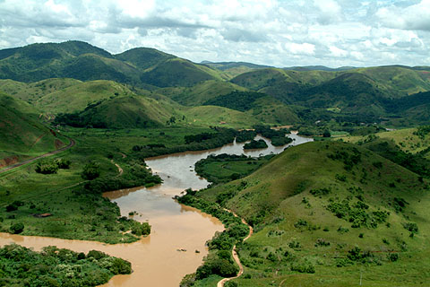
                            <div class="absolute bottom-0 left-0 right-0 bg-gradient-to-t from-black/70 to-transparent px-4 py-3">
                                <span class="text-white font-bold text-base drop-shadow">💧 Bacia do Rio Guandu</span>
                                <p class="text-white/80 text-xs mt-0.5">Principal fonte de abastecimento da Região Metropolitana do RJ</p>
                            </div>
                        </div>
                        <h3 class="font-bold text-xl text-blue-800">Importância para o Estado</h3>
                        <p>O Rio Guandu é a espinha dorsal do abastecimento de água do Rio de Janeiro, fornecendo água tratada para mais de 9 milhões de pessoas na Região Metropolitana.</p>
                        <h3 class="font-bold text-xl text-blue-800">Desafios de Preservação</h3>
                        <p>Os maiores desafios incluem o despejo de esgoto doméstico e industrial sem tratamento, o descarte irregular de lixo, assoreamento, enchentes e a contaminação por produtos químicos, que afetam a qualidade da água e a vida aquática.</p>
                    </div>`
            },
            racismo: {
                title: 'Racismo Ambiental',
                icon: 'fa-triangle-exclamation',
                color: 'text-red-600',
                barColor: 'bg-red-500',
                borderColor: 'border-red-400',
                bgColor: 'bg-red-100',
                content: `
                    <div class="space-y-4 text-gray-700">
                        <h3 class="font-bold text-xl text-red-800">O que é Racismo Ambiental?</h3>
                        <p>É a desproporcionalidade com que populações vulneráveis, majoritariamente negras e periféricas, são expostas a danos ambientais. Isso inclui morar em áreas de risco, falta de saneamento básico e proximidade com lixões e indústrias poluentes.</p>

                        <div class="w-full rounded-xl overflow-hidden shadow-md relative img-card" onclick="openImageModal('lixao_gramacho')">
                            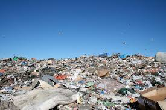
                            <div class="absolute bottom-0 left-0 right-0 bg-gradient-to-t from-black/75 to-transparent px-4 py-3">
                                <span class="text-white font-bold text-base drop-shadow">🗑️ Lixão de Jardim Gramacho</span>
                                <p class="text-white/80 text-xs mt-0.5">Duque de Caxias — Marco de injustiça socioambiental</p>
                            </div>
                        </div>

                        <h3 class="font-bold text-xl text-red-800 mt-4">Principais Regiões Afetadas</h3>
                        <p>Bairros às margens dos rios Iguaçu, Botas e Sarapuí (Belford Roxo, São João de Meriti, Duque de Caxias) sofrem historicamente com inundações. A região do antigo Lixão de Jardim Gramacho também é um marco de injustiça socioambiental.</p>
                        <h3 class="font-bold text-xl text-red-800 mt-4">Desafios e Impactos</h3>
                        <p>A falta de infraestrutura urbana causa perda de bens materiais durante enchentes, proliferação de doenças hídricas (leptospirose, dengue) e a reprodução de ciclos de pobreza e marginalização.</p>

                        <div class="w-full rounded-xl overflow-hidden shadow-md relative img-card" onclick="openImageModal('desafios_enchentes')">
                            
                            <div class="absolute bottom-0 left-0 right-0 bg-gradient-to-t from-black/75 to-transparent px-4 py-3">
                                <span class="text-white font-bold text-base drop-shadow">🌊 Enchentes na Baixada Fluminense</span>
                                <p class="text-white/80 text-xs mt-0.5">Impacto desigual sobre comunidades periféricas</p>
                            </div>
                        </div>
                    </div>`
            },
            ecoturismo: {
                title: 'Eco Turismo',
                icon: 'fa-map',
                color: 'text-teal-600',
                barColor: 'bg-teal-500',
                borderColor: 'border-teal-400',
                bgColor: 'bg-teal-100',
                content: `
                    <div class="space-y-6 text-gray-700">
                        <h3 class="font-bold text-xl text-teal-800">Ações de Valorização</h3>
                        <p>O Ecoturismo surge como ferramenta para gerar renda local sustentável, promover o orgulho territorial e educar visitantes sobre a importância da preservação das riquezas naturais da Baixada.</p>

                        <div class="w-full rounded-xl overflow-hidden shadow-md relative img-card" onclick="openImageModal('museu_sao_bento')">
                            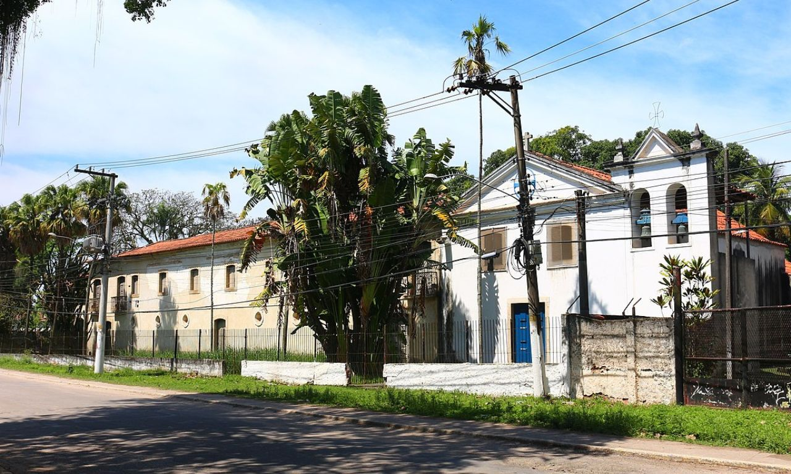
                            <div class="absolute bottom-0 left-0 right-0 bg-gradient-to-t from-black/70 to-transparent px-4 py-3">
                                <span class="text-white font-bold text-base drop-shadow">🏛️ Museu Vivo do São Bento (MVSB)</span>
                            </div>
                        </div>

                        <h3 class="font-bold text-xl text-teal-800">Principais Pontos Turísticos e Museus</h3>

                        <div class="rounded-xl overflow-hidden shadow-md border border-zinc-700 img-card" onclick="openImageModal('cachoeiras_tingua')">
                            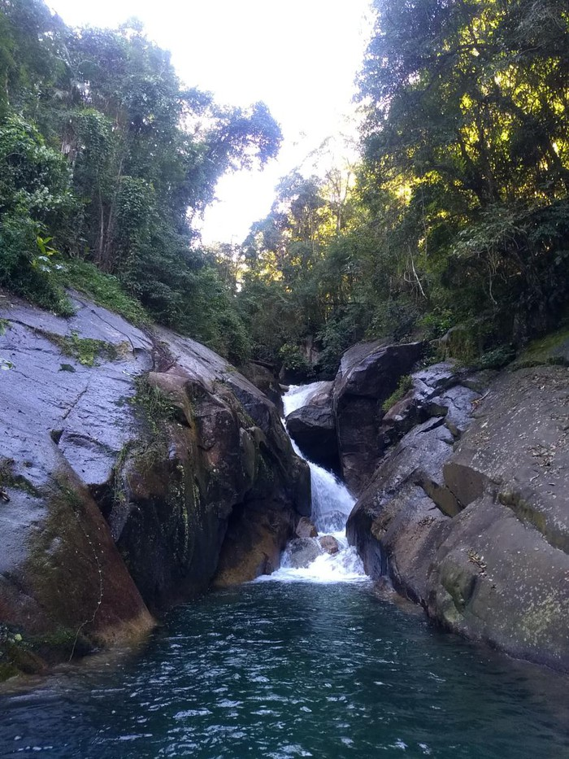
                            <div class="bg-zinc-800 px-4 py-3">
                                <p class="font-bold text-teal-400 text-sm">🌊 Cachoeiras de Tinguá</p>
                                <p class="text-sm text-gray-400 mt-1">Roteiros de trilhas e banhos de rio.</p>
                            </div>
                        </div>

                        <div class="rounded-xl overflow-hidden shadow-md border border-zinc-700 img-card" onclick="openImageModal('parque_nova_iguacu_eco')">
                            
                            <div class="bg-zinc-800 px-4 py-3">
                                <p class="font-bold text-teal-400 text-sm">🌿 Parque Natural de Nova Iguaçu</p>
                                <p class="text-sm text-gray-400 mt-1">Trilhas, poços e rampas de voo livre.</p>
                            </div>
                        </div>

                        <div class="rounded-xl overflow-hidden shadow-md border border-zinc-700 img-card" onclick="openImageModal('museu_ciencia_vida')">
                            
                            <div class="bg-zinc-800 px-4 py-3">
                                <p class="font-bold text-teal-400 text-sm">🔬 Museu Ciência e Vida — Duque de Caxias</p>
                                <p class="text-sm text-gray-400 mt-1">Difusão científica e educação ambiental.</p>
                            </div>
                        </div>

                        <div class="rounded-xl overflow-hidden shadow-md border border-zinc-700 img-card" onclick="openImageModal('pico_coragem')">
                            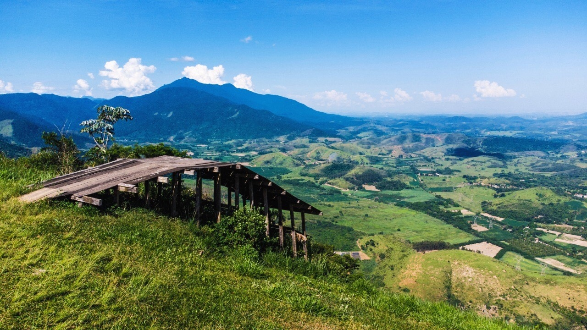
                            <div class="bg-zinc-800 px-4 py-3">
                                <p class="font-bold text-teal-400 text-sm">⛰️ Pico da Coragem — Japeri</p>
                                <p class="text-sm text-gray-400 mt-1">Turismo de aventura e contemplação.</p>
                            </div>
                        </div>
                    </div>`
            }
        };

        const QUIZ_QUESTIONS = [
            { p: "Qual é a principal reserva biológica mencionada na Flora da Baixada Fluminense?", r: "Reserva Biológica do Tinguá", err: ["Reserva de Poço das Antas", "Parque Nacional da Tijuca", "Parque do Mendanha"] },
            { p: "Qual animal, frequentemente ameaçado pelo tráfico, é nativo da região?", r: "Tiê-sangue", err: ["Arara-azul", "Lobo-guará", "Peixe-boi"] },
            { p: "Qual espécie introduzida se tornou uma praga na Baixada Fluminense?", r: "Caramujo-africano", err: ["Capivara", "Jacaré-de-papo-amarelo", "Preguiça"] },
            { p: "Qual bacia hidrográfica é fundamental para o abastecimento de água de 9 milhões de pessoas no RJ?", r: "Bacia do Rio Guandu", err: ["Bacia do Rio Amazonas", "Bacia do Rio Tietê", "Bacia do Rio Paraíba do Sul"] },
            { p: "O que caracteriza o Racismo Ambiental?", r: "Exposição desproporcional de populações vulneráveis a danos ambientais", err: ["Poluição causada apenas por indústrias estrangeiras", "O desmatamento focado em uma única espécie de árvore", "A falta de chuva nas capitais"] },
            { p: "Qual antigo lixão de Duque de Caxias é um símbolo histórico de injustiça ambiental?", r: "Jardim Gramacho", err: ["Lixão de Gericinó", "Aterro do Flamengo", "Lixão de Bangu"] },
            { p: "Qual é um dos principais impactos da falta de saneamento básico relatado nas enchentes?", r: "Doenças hídricas como leptospirose", err: ["Seca severa", "Aumento do tráfico de animais", "Surgimento de novas espécies vegetais"] },
            { p: "No Eco Turismo, qual local em Japeri é conhecido pelo turismo de aventura?", r: "Pico da Coragem", err: ["Pão de Açúcar", "Pedra da Gávea", "Dedo de Deus"] },
            { p: "Onde está localizado o Museu Ciência e Vida, que auxilia na difusão ambiental?", r: "Duque de Caxias", err: ["Nova Iguaçu", "Belford Roxo", "São João de Meriti"] },
            { p: "Qual árvore imponente é nativa da Mata Atlântica da região?", r: "Jequitibá-rosa", err: ["Pinheiro-do-paraná", "Baobá", "Eucalipto"] },
        ];

        // --- INFORMAÇÕES DAS IMAGENS ---
        const IMAGE_INFO = {
            parque_municipal_nova_iguacu: {
                titulo: "🌿 Parque Natural Municipal de Nova Iguaçu",
                subtitulo: "Reserva de Mata Atlântica — Parque do Vulcão",
                descricao: "Com mais de 1.600 hectares de Mata Atlântica preservada, é um dos maiores parques urbanos do Brasil. Localizado em Nova Iguaçu, o Parque do Vulcão abriga trilhas de diferentes níveis, cachoeiras, poços naturais e uma biodiversidade exuberante. É gerido pela Prefeitura de Nova Iguaçu e é ponto de referência para educação ambiental e ecoturismo na Baixada Fluminense.",
                cor: "text-green-600"
            },
            jequitiba_rosa: {
                titulo: "🌳 Jequitibá-rosa",
                subtitulo: "Cariniana legalis — Mata Atlântica",
                descricao: "Uma das maiores árvores da Mata Atlântica, o Jequitibá-rosa pode atingir 40 metros de altura e viver mais de 1.000 anos. Seu tronco imponente, que pode chegar a 4 metros de diâmetro, é um santuário de biodiversidade. Sua madeira foi muito explorada durante séculos, o que a tornou uma espécie ameaçada de extinção, hoje protegida por lei.",
                cor: "text-green-600"
            },
            ipe_amarelo: {
                titulo: "🌼 Ipê-amarelo",
                subtitulo: "Handroanthus albus — Símbolo do Brasil",
                descricao: "Considerado o símbolo nacional do Brasil, o Ipê-amarelo floresce no inverno quando suas folhas caem, criando explosões de flores douradas que iluminam a paisagem. É fundamental para a fauna local, alimentando abelhas, beija-flores e outros polinizadores. Sua madeira é uma das mais resistentes e valiosas do país.",
                cor: "text-green-600"
            },
            quaresmeira: {
                titulo: "🌸 Quaresmeira",
                subtitulo: "Tibouchina granulosa — Flora Nativa",
                descricao: "Árvore nativa da Mata Atlântica que floresce durante a Quaresma com belas flores roxas e rosadas. Muito utilizada na arborização urbana da Baixada Fluminense, é um símbolo da primavera local. Suas flores atraem abelhas e borboletas nativas, sendo importante para a manutenção dos polinizadores locais.",
                cor: "text-green-600"
            },
            pau_brasil: {
                titulo: "🪵 Pau-brasil",
                subtitulo: "Paubrasilia echinata — Árvore Nacional",
                descricao: "A espécie que deu nome ao nosso país. Quase extinta pela exploração colonial — sua madeira produzia um corante vermelho valioso na Europa — é hoje símbolo nacional e espécie protegida pela legislação. Programas de replantio na Mata Atlântica buscam restaurar suas populações. Cada árvore pode viver centenas de anos.",
                cor: "text-green-600"
            },
            tiesangue: {
                titulo: "🐦 Tiê-sangue",
                subtitulo: "Ramphocelus bresilius — Endêmica do Brasil",
                descricao: "Ave da família Thraupidae, endêmica do Brasil e facilmente reconhecível pela plumagem vermelha intensa do macho em contraste com o bico azul-pálido. Habita as bordas de Mata Atlântica, jardins e quintais com vegetação nativa. Sua presença é indicador de saúde ambiental e biodiversidade. Sofre ameaça pelo tráfico de animais silvestres.",
                cor: "text-orange-600"
            },
            tucano_bico_preto: {
                titulo: "🦜 Tucano-de-bico-preto",
                subtitulo: "Ramphastos vitellinus — Dispersor de Sementes",
                descricao: "Um dos maiores tucanos do Brasil, reconhecido pelo enorme bico colorido e pelo canto marcante. Essencial para a dispersão de sementes de árvores nativas, sendo um verdadeiro arquiteto da floresta. Vive em grupos familiares nas copas das árvores. Espécie ameaçada pelo desmatamento e tráfico de animais.",
                cor: "text-orange-600",
                contain: true
            },
            jacare_papo_amarelo: {
                titulo: "🦎 Jacaré-de-papo-amarelo",
                subtitulo: "Caiman latirostris — Réptil Nativo",
                descricao: "Réptil nativo que habita rios, lagos e pântanos da Baixada Fluminense. Esteve à beira da extinção pelo comércio ilegal de couro, mas se recuperou graças a programas de conservação e criação em cativeiro. É um importante predador dos ecossistemas aquáticos, controlando populações de peixes e capivaras. Protegido por lei desde 1967.",
                cor: "text-orange-600"
            },
            caramujo_africano: {
                titulo: "🐌 Caramujo-africano",
                subtitulo: "Achatina fulica — Espécie Invasora",
                descricao: "Introduzido no Brasil na década de 1980 para criação comercial (que fracassou), tornou-se uma das piores pragas ambientais do país. Pode transmitir meningite eosinofílica e devastar plantações. Sem predadores naturais no Brasil, multiplica-se rapidamente e compete com espécies de caramujos nativos. Seu controle é responsabilidade de toda a comunidade.",
                cor: "text-red-600"
            },
            sagui_tufo_branco: {
                titulo: "🐒 Sagui-de-tufo-branco",
                subtitulo: "Callithrix jacchus — Espécie Invasora",
                descricao: "Originário do Nordeste brasileiro, foi amplamente introduzido no Rio de Janeiro como animal de estimação. Hibridiza com saguis nativos, transmite herpesvírus fatal para primatas e predata ninhos de aves. É considerado uma das principais ameaças à fauna nativa da Mata Atlântica fluminense. Soltar saguis na natureza é crime ambiental.",
                cor: "text-red-600"
            },
            bacia_rio_guandu: {
                titulo: "💧 Bacia do Rio Guandu",
                subtitulo: "Principal fonte de água do RJ",
                descricao: "Abastece mais de 9 milhões de pessoas na Região Metropolitana do Rio de Janeiro — a maior do estado. Nasce na Serra do Mar e percorre municípios da Baixada Fluminense antes de desaguar na Baía de Sepetiba. A Estação de Tratamento do Guandu é a maior do mundo. Enfrenta sérios desafios de poluição industrial e doméstica que ameaçam a qualidade da água.",
                cor: "text-blue-600"
            },
            museu_sao_bento: {
                titulo: "🏛️ Museu Vivo do São Bento",
                subtitulo: "MVSB — Duque de Caxias",
                descricao: "Localizado no bairro São Bento, em Duque de Caxias, é um espaço de memória, arte e cultura comprometido com a preservação da história e identidade local. Realiza exposições, oficinas de arte, eventos culturais e ações de educação patrimonial. É uma das principais referências culturais da Baixada Fluminense e símbolo de resistência e valorização do patrimônio periférico.",
                cor: "text-teal-600"
            },
            cachoeiras_tingua: {
                titulo: "🌊 Cachoeiras de Tinguá",
                subtitulo: "Nova Iguaçu — Ecoturismo na Serra",
                descricao: "Situadas na Serra do Tinguá, em Nova Iguaçu, oferecem roteiros de ecoturismo com trilhas de diferentes níveis e banhos de rio em meio à exuberante Mata Atlântica. A região faz parte da Reserva Biológica do Tinguá, uma das maiores reservas federais do estado do RJ, com mais de 26.000 hectares de floresta preservada.",
                cor: "text-teal-600"
            },
            parque_nova_iguacu_eco: {
                titulo: "🌿 Parque Natural de Nova Iguaçu",
                subtitulo: "Trilhas, poços e voo livre",
                descricao: "O Parque Natural de Nova Iguaçu é o destino perfeito para quem busca aventura e contato com a natureza. Oferece trilhas para todos os níveis, poços de águas cristalinas para banho e rampas para voo livre de parapente e asa-delta. O parque é administrado pela Prefeitura de Nova Iguaçu e recebe visitantes de toda a Região Metropolitana.",
                cor: "text-teal-600"
            },
            museu_ciencia_vida: {
                titulo: "🔬 Museu Ciência e Vida",
                subtitulo: "Duque de Caxias — Educação Científica",
                descricao: "Inaugurado em 2012, é um dos principais espaços de difusão científica do estado do Rio de Janeiro. Possui exposições permanentes e temporárias interativas voltadas ao público escolar e familiar, com foco na popularização da ciência. Realiza atividades sobre meio ambiente, astronomia e tecnologia. Localizado no centro de Duque de Caxias, é de entrada gratuita.",
                cor: "text-teal-600"
            },
            pico_coragem: {
                titulo: "⛰️ Pico da Coragem",
                subtitulo: "Japeri — 1.040m de altitude",
                descricao: "Com 1.040 metros de altitude, é o ponto mais alto da Baixada Fluminense e uma das mais belas vistas panorâmicas da Região Metropolitana do Rio de Janeiro. Destino popular entre trilheiros, praticantes de rapel e alpinistas iniciantes. É também um dos principais pontos de largada para voos de parapente da região. A trilha de acesso leva cerca de 3 horas.",
                cor: "text-teal-600"
            },
            lixao_gramacho: {
                titulo: "🗑️ Lixão de Jardim Gramacho",
                subtitulo: "Duque de Caxias — Injustiça Socioambiental",
                descricao: "O Lixão de Jardim Gramacho, localizado em Duque de Caxias, foi o maior aterro sanitário a céu aberto da América Latina, operando de 1978 a 2012. Durante décadas, comunidades periféricas viveram ao lado de toneladas de lixo, expostas a contaminação do solo, da água e do ar. É hoje um símbolo histórico de racismo ambiental e injustiça socioambiental na Baixada Fluminense.",
                cor: "text-red-600"
            },
            desafios_enchentes: {
                titulo: "🌊 Enchentes na Baixada Fluminense",
                subtitulo: "Impacto desigual sobre comunidades periféricas",
                descricao: "As enchentes na Baixada Fluminense atingem desproporcionalmente as populações negras e periféricas que habitam as áreas de várzea dos rios Iguaçu, Sarapuí e Botas. A falta de investimento em infraestrutura de drenagem e saneamento nessas regiões é uma forma concreta de racismo ambiental: as consequências das chuvas — perda de bens, doenças hídricas e morte — recaem sistematicamente sobre os mais pobres.",
                cor: "text-red-600"
            }
        };

        // --- ESTADO GLOBAL (STATE) ---
        let currentScreen = 'splash'; 
        let currentUser = null; 
        let activeTopic = null;
        let progress = { flora: false, fauna: false, hidricos: false, racismo: false, ecoturismo: false };
        let quizQuestions = [];
        let currentQIndex = 0;
        let score = 0;
        let showAdminLogin = false;
        let idleTimer = null;

        // Controle de rastreamento de tempo por conteúdo/quiz
        let activeTracker = null; // { key: string, startTime: number }
        const RETENTION_THRESHOLD_SEC = 10; // Mínimo de 10s para considerar retenção efetiva

        // Base de Dados Simulada (Perfis nativos: Wanderson KS Santos [koudan] e cliente [visualização])
        let usersDb = [
            { id: 1, login: 'Wanderson KS Santos', role: 'koudan', native: true },
            { id: 2, login: 'cliente', role: 'cliente_nativo', native: true }
        ];

        let stats = {
            hoje: 0, semana: 0, mes: 0,
            ages: { 'ate13': 0, '14a20': 0, '21a35': 0, '36a50': 0, '51mais': 0 },
            education: { 'Fundamental': 0, 'Medio': 0, 'Superior': 0 },
            jogadores: [],
            conteudos: {
                flora:      { acessos: 0, tempoTotalSeg: 0, retencoes: 0, concluidos: 0 },
                fauna:      { acessos: 0, tempoTotalSeg: 0, retencoes: 0, concluidos: 0 },
                hidricos:   { acessos: 0, tempoTotalSeg: 0, retencoes: 0, concluidos: 0 },
                racismo:    { acessos: 0, tempoTotalSeg: 0, retencoes: 0, concluidos: 0 },
                ecoturismo: { acessos: 0, tempoTotalSeg: 0, retencoes: 0, concluidos: 0 },
                quiz:       { acessos: 0, tempoTotalSeg: 0, retencoes: 0, concluidos: 0 }
            }
        };

        // --- FUNÇÕES DE RASTREAMENTO DE TEMPO E RETENÇÃO ---
        function startTracker(key) {
            stopTracker(false);

            if (stats.conteudos[key]) {
                stats.conteudos[key].acessos++;
                activeTracker = {
                    key: key,
                    startTime: Date.now()
                };
            }
        }

        function stopTracker(markedAsCompleted = false) {
            if (!activeTracker) return;

            const { key, startTime } = activeTracker;
            const elapsedSec = Math.max(1, Math.round((Date.now() - startTime) / 1000));
            const record = stats.conteudos[key];

            if (record) {
                record.tempoTotalSeg += elapsedSec;
                if (elapsedSec >= RETENTION_THRESHOLD_SEC) {
                    record.retencoes++;
                }
                if (markedAsCompleted) {
                    record.concluidos++;
                }
            }

            activeTracker = null;
        }

        document.addEventListener('visibilitychange', () => {
            if (document.hidden && activeTracker) {
                const key = activeTracker.key;
                stopTracker(false);
                window._pausedTrackerKey = key;
            } else if (!document.hidden && window._pausedTrackerKey) {
                const key = window._pausedTrackerKey;
                window._pausedTrackerKey = null;
                if ((currentScreen === 'content' && activeTopic === key) || (currentScreen === 'quiz' && key === 'quiz')) {
                    activeTracker = { key: key, startTime: Date.now() };
                }
            }
        });

        function formatDuration(totalSeconds) {
            if (!totalSeconds || totalSeconds <= 0) return '0s';
            const mins = Math.floor(totalSeconds / 60);
            const secs = totalSeconds % 60;
            if (mins === 0) return `${secs}s`;
            return `${mins}m ${secs < 10 ? '0' : ''}${secs}s`;
        }

        // --- FUNÇÕES UTILITÁRIAS ---
        const shuffleArray = (array) => [...array].sort(() => Math.random() - 0.5);

        function render() {
            const root = document.getElementById('root');
            root.innerHTML = '';
            
            switch (currentScreen) {
                case 'splash': root.innerHTML = getSplashHTML(); initSplash(); break;
                case 'login':  root.innerHTML = getLoginHTML(); initLoginIdle(); break;
                case 'home': root.innerHTML = getHomeHTML(); break;
                case 'content': root.innerHTML = getContentHTML(); break;
                case 'quiz': root.innerHTML = getQuizHTML(); break;
                case 'result': root.innerHTML = getResultHTML(); break;
                case 'koudan_panel': root.innerHTML = getDashboardAdminHTML(true); break;
                case 'admin_panel': root.innerHTML = getDashboardAdminHTML(false); break;
            }
            window.scrollTo(0, 0);
        }

        // --- IDLE TIMER (LOGIN) ---
        function initLoginIdle() {
            clearIdleTimer();
            const IDLE_MS = 10000;

            const reset = () => {
                clearTimeout(idleTimer);
                idleTimer = setTimeout(() => {
                    if (currentScreen === 'login') {
                        currentScreen = 'splash';
                        render();
                    }
                }, IDLE_MS);
            };

            reset();

            const events = ['mousemove', 'mousedown', 'keydown', 'touchstart', 'scroll'];
            const handler = () => {
                if (currentScreen !== 'login') {
                    clearIdleTimer();
                    events.forEach(ev => document.removeEventListener(ev, handler));
                    return;
                }
                reset();
            };
            events.forEach(ev => document.addEventListener(ev, handler, { passive: true }));

            idleTimer._handler = handler;
            idleTimer._events  = events;
        }

        function clearIdleTimer() {
            if (idleTimer) {
                clearTimeout(idleTimer);
                if (idleTimer._events && idleTimer._handler) {
                    idleTimer._events.forEach(ev =>
                        document.removeEventListener(ev, idleTimer._handler)
                    );
                }
                idleTimer = null;
            }
        }

        function toggleAdminLogin(show) {
            showAdminLogin = show;
            render();
        }

        // --- LÓGICA DE LOGIN / REGISTO ---
        function handleRegisterPlayer(e) {
            e.preventDefault();
            const regName = document.getElementById('regName').value;
            const regAge  = document.getElementById('regAge').value;
            const regEdu  = document.getElementById('regEdu').value;

            if(!regName || !regAge) return;

            const ageNum = parseInt(regAge);
            let ageCat = ageNum <= 13 ? 'ate13' : ageNum <= 20 ? '14a20' : ageNum <= 35 ? '21a35' : ageNum <= 50 ? '36a50' : '51mais';

            const newUser = { id: Date.now(), name: regName, role: 'jogador', age: ageNum, education: regEdu };

            stats.hoje++; stats.semana++; stats.mes++;
            stats.ages[ageCat]++;
            stats.education[regEdu]++;
            stats.jogadores.unshift(regName);

            usersDb.push(newUser);
            currentUser = newUser;
            clearIdleTimer();
            currentScreen = 'home';
            render();
        }

        function handleAdminLogin(e) {
            e.preventDefault();
            const loginStr = document.getElementById('adminLogin').value.trim();
            const p1Str   = document.getElementById('pass1').value.trim();
            const p2Str   = document.getElementById('pass2').value.trim();
            const errorMsg = document.getElementById('login-error');

            // 1. Koudan nativo
            if (loginStr === 'Wanderson KS Santos' && p1Str === 'kurogane' && p2Str === 'hwarangdo') {
                clearIdleTimer();
                currentUser = { id: 1, name: 'Wanderson KS Santos', role: 'koudan' };
                currentScreen = 'koudan_panel';
                render();
                return;
            }

            // 2. Perfil Admin Nativo "cliente" (Apenas visualização)
            if (loginStr === 'cliente' && p1Str === '1234') {
                clearIdleTimer();
                currentUser = { id: 2, name: 'cliente', role: 'cliente_nativo' };
                currentScreen = 'admin_panel';
                render();
                return;
            }

            // 3. Koudans dinâmicos
            const dynKoudan = usersDb.find(u =>
                u.role === 'koudan' && !u.native && u.login === loginStr && u.pass1 === p1Str && u.pass2 === p2Str
            );
            if (dynKoudan) {
                clearIdleTimer();
                currentUser = { id: dynKoudan.id, name: dynKoudan.login, role: 'koudan' };
                currentScreen = 'koudan_panel';
                render();
                return;
            }

            // 4. Admin Temp dinâmico
            const today = new Date().toISOString().split('T')[0];
            const dynAdmin = usersDb.find(u =>
                u.role === 'admin_temp' && u.login === loginStr && u.pass1 === p1Str && u.expiry >= today
            );
            if (dynAdmin) {
                clearIdleTimer();
                currentUser = { id: dynAdmin.id, name: dynAdmin.login, role: 'admin_temp' };
                currentScreen = 'admin_panel';
                render();
                return;
            }

            // 5. Admin Temp expirado
            const expiredAdmin = usersDb.find(u =>
                u.role === 'admin_temp' && u.login === loginStr && u.pass1 === p1Str
            );
            if (expiredAdmin) {
                errorMsg.textContent = `Acesso expirado em ${expiredAdmin.expiry}.`;
                errorMsg.classList.remove('hidden');
                return;
            }

            errorMsg.textContent = 'Credenciais inválidas.';
            errorMsg.classList.remove('hidden');
        }

        function logout() {
            stopTracker(false);
            window._pausedTrackerKey = null;
            clearIdleTimer();
            currentUser = null;
            progress = { flora: false, fauna: false, hidricos: false, racismo: false, ecoturismo: false };
            currentScreen = 'login';
            showAdminLogin = false;
            render();
        }

        // --- NAVEGAÇÃO INTERNA ---
        function openContent(key) {
            activeTopic = key;
            currentScreen = 'content';
            progress[key] = true;
            startTracker(key);
            render();
        }

        function goHome(completed = false) {
            stopTracker(completed);
            window._pausedTrackerKey = null;
            currentScreen = 'home';
            render();
        }

        // --- LÓGICA DO QUIZ ---
        function startQuiz() {
            const questions = QUIZ_QUESTIONS.map(q => {
                const options = shuffleArray([q.r, ...q.err]);
                return { ...q, options };
            });
            quizQuestions = shuffleArray(questions);
            currentQIndex = 0;
            score = 0;
            currentScreen = 'quiz';
            startTracker('quiz');
            render();
        }

        function handleAnswer(answer) {
            const isCorrect = answer === quizQuestions[currentQIndex].r;
            if (isCorrect) score++;

            if (currentQIndex + 1 < quizQuestions.length) {
                currentQIndex++;
                render();
            } else {
                stopTracker(true);
                currentScreen = 'result';
                render();
            }
        }

        // --- TELA SPLASH ---
        function getSplashHTML() {
            return `
                <div id="splash-screen" style="position:fixed;inset:0;background:#000;z-index:9999;cursor:pointer;overflow:hidden;" onclick="goToLogin()">
                    <video
                        id="splash-video"
                        src="abertura.mp4"
                        style="width:100%;height:100%;object-fit:cover;display:block;"
                        autoplay
                        muted
                        playsinline
                    ></video>
                    <div id="splash-cta" style="
                        display:none;
                        position:absolute;
                        bottom:10%;
                        left:0;right:0;
                        text-align:center;
                        pointer-events:none;
                    ">
                        <div class="splash-cta-enter" style="display:inline-block;">
                            <span class="splash-cta" style="
                                display:inline-block;
                                color:#fff;
                                font-size:1.25rem;
                                font-weight:700;
                                letter-spacing:0.05em;
                                background:rgba(0,0,0,0.45);
                                padding:0.6rem 2rem;
                                border-radius:999px;
                                border:2px solid rgba(255,255,255,0.35);
                                backdrop-filter:blur(6px);
                            ">👆 Toque para interagir</span>
                        </div>
                    </div>
                </div>
            `;
        }

        function initSplash() {
            const video = document.getElementById('splash-video');
            const cta   = document.getElementById('splash-cta');
            if (!video) return;
            video.addEventListener('ended', function() {
                cta.style.display = 'block';
                video.currentTime = 0;
                video.play();
            });
            video.addEventListener('error', function() { goToLogin(); });
        }

        // --- MODAL DE IMAGEM ---
        function openImageModal(key) {
            const info = IMAGE_INFO[key];
            if (!info) return;

            const existing = document.getElementById('img-modal');
            if (existing) existing.remove();

            const srcMap = {
                parque_municipal_nova_iguacu: 'parque_municipal_nova_iguacu.jpg',
                jequitiba_rosa: 'jequitiba_rosa.jpg',
                ipe_amarelo: 'ipe_amarelo.png',
                quaresmeira: 'quaresmeira.jpg',
                pau_brasil: 'pau_brasil.jpg',
                tiesangue: 'tiesangue.jpg',
                tucano_bico_preto: 'tucano_bico_preto.jpg',
                jacare_papo_amarelo: 'jacare_papo_amarelo.jpg',
                caramujo_africano: 'caramujo_africano.jpg',
                sagui_tufo_branco: 'sagui_tufo_branco.jpg',
                bacia_rio_guandu: 'bacia_rio_guandu.jpg',
                museu_sao_bento: 'museu_sao_bento.jpg',
                cachoeiras_tingua: 'cachoeiras_tingua.jpg',
                parque_nova_iguacu_eco: 'parque_nova_iguacu_eco.jpg',
                museu_ciencia_vida: 'museu_ciencia_vida.jpg',
                pico_coragem: 'pico_coragem.jpg',
                lixao_gramacho: 'lixao_gramacho.jpg',
                desafios_enchentes: 'desafios_enchentes.png'
            };

            const modal = document.createElement('div');
            modal.id = 'img-modal';
            modal.style.cssText = 'position:fixed;inset:0;z-index:99999;background:rgba(0,0,0,0.88);backdrop-filter:blur(8px);display:flex;align-items:center;justify-content:center;padding:1rem;';
            modal.onclick = function(e){ if(e.target===modal) closeImageModal(); };

            modal.innerHTML = `
                <div class="modal-enter" style="background:#fff;border-radius:1.25rem;max-width:480px;width:100%;overflow:hidden;box-shadow:0 25px 60px rgba(0,0,0,0.6);">
                    <div style="position:relative;background:${info.contain ? '#18181b' : '#000'};">
                        
                        <div style="position:absolute;inset:0;background:linear-gradient(to top,rgba(0,0,0,0.65) 0%,transparent 55%);"></div>
                        <button onclick="closeImageModal()" style="position:absolute;top:0.75rem;right:0.75rem;background:rgba(0,0,0,0.55);border:none;border-radius:50%;width:2.2rem;height:2.2rem;color:#fff;font-size:1.1rem;cursor:pointer;display:flex;align-items:center;justify-content:center;">✕</button>
                        <div style="position:absolute;bottom:0;left:0;right:0;padding:0.75rem 1rem;">
                            <p style="color:#fff;font-weight:800;font-size:1rem;margin:0;text-shadow:0 1px 4px rgba(0,0,0,0.8);">${info.titulo}</p>
                            <p style="color:rgba(255,255,255,0.8);font-size:0.75rem;margin:2px 0 0;">${info.subtitulo}</p>
                        </div>
                    </div>
                    <div style="padding:1.25rem 1.25rem 1.5rem;">
                        <p style="color:#374151;font-size:0.92rem;line-height:1.65;margin:0;">${info.descricao}</p>
                        <button onclick="closeImageModal()" style="margin-top:1.25rem;width:100%;padding:0.75rem;background:#16a34a;color:#fff;border:none;border-radius:0.75rem;font-weight:700;font-size:0.95rem;cursor:pointer;">Fechar</button>
                    </div>
                </div>
            `;
            document.body.appendChild(modal);
        }

        function closeImageModal() {
            const modal = document.getElementById('img-modal');
            if (modal) modal.remove();
        }

        function goToLogin() {
            currentScreen = 'login';
            render();
        }

        // --- GERAÇÃO DE HTML (SCREENS) ---
        
        function getLoginHTML() {
            let formHTML = !showAdminLogin ? `
                <form onsubmit="handleRegisterPlayer(event)" class="space-y-4">
                    <div>
                        <label class="block text-sm font-semibold text-gray-700">Nome ou Apelido</label>
                        <input id="regName" type="text" required class="mt-1 w-full p-3 border border-gray-300 bg-white text-gray-800 rounded-xl focus:ring-2 focus:ring-green-500 outline-none" placeholder="Como quer ser chamado?">
                    </div>
                    <div>
                        <label class="block text-sm font-semibold text-gray-700">Idade</label>
                        <input id="regAge" type="number" required min="1" class="mt-1 w-full p-3 border border-gray-300 bg-white text-gray-800 rounded-xl focus:ring-2 focus:ring-green-500 outline-none" placeholder="Sua idade">
                    </div>
                    <div>
                        <label class="block text-sm font-semibold text-gray-700">Escolaridade</label>
                        <select id="regEdu" class="mt-1 w-full p-3 border border-gray-300 bg-white text-gray-800 rounded-xl focus:ring-2 focus:ring-green-500 outline-none">
                            <option value="Fundamental">Ensino Fundamental</option>
                            <option value="Medio">Ensino Médio</option>
                            <option value="Superior">Ensino Superior</option>
                        </select>
                    </div>
                    <button type="submit" class="w-full bg-green-600 hover:bg-green-700 text-white font-bold py-3 px-4 rounded-xl transition-all shadow-lg hover:shadow-green-500/50 mt-4 flex justify-center items-center gap-2">
                        ▶ Iniciar Aventura
                    </button>
                    <div class="text-center mt-4">
                        <button type="button" onclick="toggleAdminLogin(true)" class="text-xs text-gray-400 hover:text-green-600">Acesso Restrito</button>
                    </div>
                </form>
            ` : `
                <form onsubmit="handleAdminLogin(event)" class="space-y-4">
                    <div id="login-error" class="hidden bg-red-100 text-red-600 p-2 text-sm text-center rounded-lg font-bold">Credenciais inválidas ou acesso expirado.</div>
                    <div>
                        <label class="block text-sm font-semibold text-gray-700">Login (Koudan / Admin)</label>
                        <input id="adminLogin" type="text" required class="mt-1 w-full p-3 border border-gray-300 bg-white text-gray-800 rounded-xl focus:ring-2 focus:ring-gray-500 outline-none">
                    </div>
                    <div>
                        <label class="block text-sm font-semibold text-gray-700">Senha Primária</label>
                        <input id="pass1" type="password" required class="mt-1 w-full p-3 border border-gray-300 bg-white text-gray-800 rounded-xl focus:ring-2 focus:ring-gray-500 outline-none">
                    </div>
                    <div>
                        <label class="block text-sm font-semibold text-gray-700">Senha Secundária (Apenas Koudan)</label>
                        <input id="pass2" type="password" class="mt-1 w-full p-3 border border-gray-300 bg-white text-gray-800 rounded-xl focus:ring-2 focus:ring-gray-500 outline-none">
                    </div>
                    <button type="submit" class="w-full bg-gray-800 hover:bg-gray-900 text-white font-bold py-3 px-4 rounded-xl transition-all flex justify-center items-center gap-2">
                        🔒 Autenticar
                    </button>
                    <div class="text-center mt-4">
                        <button type="button" onclick="toggleAdminLogin(false)" class="text-xs text-gray-500 hover:text-gray-800">Voltar para Registo</button>
                    </div>
                </form>
            `;

            return `
                <div class="min-h-screen bg-black flex items-center justify-center p-4 relative overflow-hidden">
                    <div class="absolute top-10 left-10 text-green-500/10 text-8xl">🌿</div>
                    <div class="absolute bottom-10 right-10 text-blue-500/10 text-9xl">💧</div>

                    <div class="bg-white rounded-2xl shadow-2xl p-8 max-w-md w-full relative z-10">
                        <div class="text-center mb-8">
                            <h1 class="text-4xl font-extrabold text-green-700 tracking-tight">ECO<span class="text-orange-500">BXD</span></h1>
                            <p class="text-sm text-gray-500 mt-2 font-medium">A Natureza da Baixada Fluminense em Suas Mãos</p>
                        </div>
                        ${formHTML}
                    </div>
                </div>
            `;
        }

        function getHomeHTML() {
            const isQuizUnlocked = Object.values(progress).every(Boolean);
            const emojiMap = { flora: '🌿', fauna: '🦜', hidricos: '💧', racismo: '⚠️', ecoturismo: '🗺️' };

            let topicsHTML = Object.keys(CONTEUDOS).map((key, idx) => {
                const data = CONTEUDOS[key];
                const isRead = progress[key];
                const delay = (idx * 0.4).toFixed(1);
                return `
                    <button onclick="openContent('${key}')" class="flex flex-col items-center justify-center p-6 rounded-2xl shadow-sm transition-all duration-300 relative overflow-hidden ${isRead ? 'bg-zinc-800 border-2 ' + data.borderColor : 'bg-zinc-900 border border-zinc-700 hover:border-zinc-500 hover:shadow-md'}">
                        ${isRead ? `<span class="absolute top-2 right-2 text-green-400 text-lg">✅</span>` : ''}
                        <div class="p-4 rounded-full mb-3 icon-float ${data.bgColor} ${data.color} shadow-md text-3xl" style="animation-delay: ${delay}s">
                            ${emojiMap[key]}
                        </div>
                        <span class="font-bold text-gray-300 text-sm text-center">${data.title}</span>
                    </button>
                `;
            }).join('');

            return `
                <div class="min-h-screen bg-black pb-8">
                    <header class="bg-zinc-900 border-b border-zinc-700 text-white p-4 shadow-md flex justify-between items-center sticky top-0 z-20">
                        <h1 class="font-bold text-xl text-green-400">ECOBXD</h1>
                        <button onclick="logout()" class="text-sm flex items-center gap-1 hover:text-green-200">
                            🚪 Sair
                        </button>
                    </header>
                    <div class="max-w-2xl mx-auto p-4 py-8">
                        <div class="bg-zinc-900 rounded-2xl p-6 shadow-sm border border-zinc-700 mb-8 text-center relative overflow-hidden">
                            <div class="absolute -right-4 -top-4 opacity-10 text-8xl">🌿</div>
                            <h2 class="text-2xl font-bold text-green-400 relative z-10">Uol! Que bom te ver por aqui!</h2>
                            <p class="text-gray-400 mt-2 relative z-10">Vamos conhecer um pouco sobre a nossa Baixada Verde? Clique em uma das opções de tópicos abaixo!</p>
                        </div>
                        <div class="grid grid-cols-2 gap-4 mb-8">
                            ${topicsHTML}
                        </div>
                        <div class="bg-zinc-900 rounded-2xl p-6 text-center border border-orange-500/30">
                            <h3 class="font-bold text-orange-400 mb-2">Desafio Final</h3>
                            <p class="text-sm text-orange-300/80 mb-4">Leia todos os tópicos para desbloquear o Quiz e provar seus conhecimentos!</p>
                            <button 
                                ${isQuizUnlocked ? 'onclick="startQuiz()"' : 'disabled'}
                                class="w-full py-4 rounded-xl font-bold text-lg transition-all shadow-md ${isQuizUnlocked ? 'bg-orange-500 hover:bg-orange-600 text-white cursor-pointer' : 'bg-zinc-700 text-zinc-500 cursor-not-allowed opacity-70'}">
                                ${isQuizUnlocked ? 'INICIAR QUIZ' : '🔒 CADEADO TRANCADO'}
                            </button>
                        </div>
                    </div>
                </div>
            `;
        }

        function getContentHTML() {
            const data = CONTEUDOS[activeTopic];
            return `
                <div class="min-h-screen bg-black pb-20">
                    <header class="${data.bgColor} p-4 shadow-sm flex items-center sticky top-0 z-20">
                        <button onclick="goHome(false)" class="${data.color} mr-4 p-2 bg-white rounded-full shadow-sm w-10 h-10 flex items-center justify-center font-bold">
                            ◀
                        </button>
                        <h1 class="font-bold text-xl ${data.color}">${data.title}</h1>
                    </header>
                    <div class="max-w-2xl mx-auto p-6 bg-white shadow-sm min-h-screen">
                        ${data.content}
                        <button onclick="goHome(true)" class="mt-8 w-full bg-zinc-700 hover:bg-zinc-600 text-white font-bold py-4 rounded-xl transition-all border border-zinc-500">
                            Marcar como lido e Voltar
                        </button>
                    </div>
                </div>
            `;
        }

        function getQuizHTML() {
            const question = quizQuestions[currentQIndex];
            const optionsHTML = question.options.map(opt => `
                <button onclick="handleAnswer('${opt.replace(/'/g, "\\'")}')" class="w-full text-left bg-zinc-800 p-4 rounded-xl shadow-sm border border-zinc-600 hover:bg-orange-500/20 hover:border-orange-500 transition-colors font-medium text-gray-200">
                    ${opt}
                </button>
            `).join('');

            return `
                <div class="min-h-screen bg-black flex flex-col">
                    <header class="bg-zinc-900 border-b border-orange-500/50 text-white p-4 shadow-md text-center">
                        <h1 class="font-bold">Quiz ECOBXD</h1>
                        <p class="text-sm">Pergunta ${currentQIndex + 1} de 10</p>
                    </header>
                    <div class="flex-1 max-w-2xl w-full mx-auto p-6 flex flex-col justify-center">
                        <div class="bg-zinc-900 rounded-2xl p-6 shadow-md border-t-4 border-orange-500 mb-6">
                            <h2 class="text-xl font-bold text-gray-100 mb-4">${question.p}</h2>
                        </div>
                        <div class="space-y-3">
                            ${optionsHTML}
                        </div>
                    </div>
                </div>
            `;
        }

        function getResultHTML() {
            const percentage = (score / 10) * 100;
            let message = "";
            let bgColor = "";
            
            if (percentage <= 50) {
                message = "Não durma no ponto senão o seu cacto pode morrer de sede!";
                bgColor = "bg-red-500";
            } else if (percentage <= 70) {
                message = "Boa ! Nosso meio ambiente está em boas mãos!";
                bgColor = "bg-blue-500";
            } else {
                message = "Você já é quase o capitão Planeta! Vai Planeta!";
                bgColor = "bg-green-500";
            }

            return `
                <div class="min-h-screen ${bgColor} text-white flex flex-col items-center justify-center p-6 text-center">
                    <div class="bg-white/20 p-8 rounded-3xl backdrop-blur-sm max-w-md w-full">
                        <h1 class="text-5xl font-black mb-2">${score}/10</h1>
                        <p class="text-xl mb-6 font-medium">Acertos</p>
                        <div class="bg-white text-gray-800 p-6 rounded-2xl shadow-xl mb-8">
                            <p class="font-bold text-lg italic">"${message}"</p>
                        </div>
                        <button onclick="goHome(false)" class="w-full bg-white text-gray-900 hover:bg-gray-100 font-bold py-4 rounded-xl transition-all shadow-lg">
                            Voltar para o Início
                        </button>
                    </div>
                </div>
            `;
        }

        function getDashboardAdminHTML(isKoudan) {
            const isClienteView = currentUser && currentUser.role === 'cliente_nativo';
            const panelTitle = isKoudan
                ? 'Painel Koudan'
                : (isClienteView ? 'Painel Cliente (Visualização)' : 'Painel Admin Temp');

            const playersHTML = stats.jogadores.length > 0
                ? stats.jogadores.map(nome => `<span class="bg-zinc-700 text-gray-300 px-3 py-1 rounded-full text-sm">${nome}</span>`).join('')
                : `<p class="text-zinc-600 text-sm italic">Nenhum jogador registrado ainda.</p>`;

            // Monta os cartões de Tempo e Retenção para cada conteúdo + Quiz
            const topicKeys = [...Object.keys(CONTEUDOS), 'quiz'];
            const contentRetentionHTML = topicKeys.map(key => {
                const isQuiz = key === 'quiz';
                const label = isQuiz ? '🏆 Desafio Quiz' : CONTEUDOS[key].title;
                const barColor = isQuiz ? 'bg-emerald-500' : CONTEUDOS[key].barColor;
                const data = stats.conteudos[key];

                const avgSec = data.acessos > 0 ? Math.round(data.tempoTotalSeg / data.acessos) : 0;
                const retentionPct = data.acessos > 0 ? Math.round((data.retencoes / data.acessos) * 100) : 0;

                return `
                    <div class="bg-zinc-800 p-4 rounded-xl border border-zinc-700">
                        <div class="flex justify-between items-center mb-2">
                            <span class="font-bold text-gray-100 text-sm">${label}</span>
                            <span class="text-xs font-bold px-3 py-1 rounded-full bg-zinc-700 text-emerald-400">
                                Retenção: ${retentionPct}%
                            </span>
                        </div>

                        <!-- Barra de Retenção -->
                        <div class="w-full bg-zinc-700 rounded-full h-2 mb-3 overflow-hidden">
                            <div class="${barColor} h-2 rounded-full transition-all duration-300" style="width: ${retentionPct}%"></div>
                        </div>

                        <div class="grid grid-cols-2 md:grid-cols-4 gap-2 text-xs text-gray-400">
                            <div class="bg-zinc-900 p-2 rounded-lg">
                                <span class="block text-zinc-500">Acessos</span>
                                <span class="font-bold text-gray-200 text-sm">${data.acessos}</span>
                            </div>
                            <div class="bg-zinc-900 p-2 rounded-lg">
                                <span class="block text-zinc-500">Tempo Médio</span>
                                <span class="font-bold text-blue-300 text-sm">${formatDuration(avgSec)}</span>
                            </div>
                            <div class="bg-zinc-900 p-2 rounded-lg">
                                <span class="block text-zinc-500">Tempo Total</span>
                                <span class="font-bold text-gray-200 text-sm">${formatDuration(data.tempoTotalSeg)}</span>
                            </div>
                            <div class="bg-zinc-900 p-2 rounded-lg">
                                <span class="block text-zinc-500">${isQuiz ? 'Finalizados' : 'Lidos até o fim'}</span>
                                <span class="font-bold text-green-400 text-sm">${data.concluidos}</span>
                            </div>
                        </div>
                    </div>
                `;
            }).join('');

            return `
                <div class="min-h-screen bg-black pb-10">
                    <header class="bg-zinc-900 border-b border-zinc-700 text-white p-4 shadow-md flex justify-between items-center">
                        <h1 class="font-bold text-xl flex items-center gap-2">
                            ⚙️ ${panelTitle}
                        </h1>
                        <button onclick="logout()" class="text-sm flex items-center gap-1 hover:text-gray-300">
                            🚪 Sair
                        </button>
                    </header>

                    <div class="max-w-4xl mx-auto p-4 py-8 space-y-6">
                        <!-- STATISTICS SECTION -->
                        <section class="bg-zinc-900 p-6 rounded-2xl shadow-sm border border-zinc-700">
                            <h2 class="text-xl font-bold text-gray-100 mb-6 flex items-center gap-2">
                                📊 <span>Estatísticas de Interação</span>
                            </h2>
                            <div class="grid grid-cols-3 gap-4 mb-8">
                                <div class="bg-zinc-800 p-4 rounded-xl text-center">
                                    <p class="text-sm text-blue-400 font-bold uppercase">Hoje</p>
                                    <p class="text-3xl font-black text-blue-300">${stats.hoje}</p>
                                </div>
                                <div class="bg-zinc-800 p-4 rounded-xl text-center">
                                    <p class="text-sm text-blue-400 font-bold uppercase">Semana</p>
                                    <p class="text-3xl font-black text-blue-300">${stats.semana}</p>
                                </div>
                                <div class="bg-zinc-800 p-4 rounded-xl text-center">
                                    <p class="text-sm text-blue-400 font-bold uppercase">Mês</p>
                                    <p class="text-3xl font-black text-blue-300">${stats.mes}</p>
                                </div>
                            </div>

                            <div class="grid grid-cols-1 md:grid-cols-2 gap-8">
                                <div>
                                    <h3 class="font-bold text-gray-300 mb-3 border-b border-zinc-700 pb-2">Acessos por Idade</h3>
                                    <ul class="space-y-2 text-sm text-gray-400">
                                        <li class="flex justify-between"><span>Até 13 anos:</span> <span class="font-bold text-gray-100">${stats.ages['ate13']}</span></li>
                                        <li class="flex justify-between"><span>14 a 20 anos:</span> <span class="font-bold text-gray-100">${stats.ages['14a20']}</span></li>
                                        <li class="flex justify-between"><span>21 a 35 anos:</span> <span class="font-bold text-gray-100">${stats.ages['21a35']}</span></li>
                                        <li class="flex justify-between"><span>36 a 50 anos:</span> <span class="font-bold text-gray-100">${stats.ages['36a50']}</span></li>
                                        <li class="flex justify-between"><span>51 anos ou mais:</span> <span class="font-bold text-gray-100">${stats.ages['51mais']}</span></li>
                                    </ul>
                                </div>
                                <div>
                                    <h3 class="font-bold text-gray-300 mb-3 border-b border-zinc-700 pb-2">Acessos por Escolaridade</h3>
                                    <ul class="space-y-2 text-sm text-gray-400">
                                        <li class="flex justify-between"><span>Ensino Fundamental:</span> <span class="font-bold text-gray-100">${stats.education['Fundamental']}</span></li>
                                        <li class="flex justify-between"><span>Ensino Médio:</span> <span class="font-bold text-gray-100">${stats.education['Medio']}</span></li>
                                        <li class="flex justify-between"><span>Ensino Superior:</span> <span class="font-bold text-gray-100">${stats.education['Superior']}</span></li>
                                    </ul>
                                </div>
                            </div>
                            
                            <div class="mt-8">
                                <h3 class="font-bold text-gray-300 mb-3 border-b border-zinc-700 pb-2 flex items-center gap-2">
                                    👥 Últimos Jogadores Cadastrados
                                </h3>
                                <div class="flex flex-wrap gap-2">
                                    ${playersHTML}
                                </div>
                            </div>
                        </section>

                        <!-- TEMPO E RETENÇÃO POR CONTEÚDO -->
                        <section class="bg-zinc-900 p-6 rounded-2xl shadow-sm border border-zinc-700">
                            <div class="flex flex-wrap justify-between items-center gap-2 mb-6">
                                <h2 class="text-xl font-bold text-gray-100 flex items-center gap-2">
                                    ⏱️ <span>Tempo e Retenção por Conteúdo</span>
                                </h2>
                                <span class="text-xs text-zinc-400">Retenção = permanência ≥ ${RETENTION_THRESHOLD_SEC}s</span>
                            </div>
                            <div class="space-y-3">
                                ${contentRetentionHTML}
                            </div>
                        </section>

                        <!-- KOUDAN SPECIFIC ACTIONS (Exclusivo Koudan; oculto para Admin Temp e Cliente) -->
                        ${isKoudan ? `
                        <section class="bg-zinc-900 p-6 rounded-2xl shadow-sm border border-zinc-700">
                            <h2 class="text-xl font-bold text-gray-100 mb-6 flex items-center gap-2">
                                ⚙️ <span>Gestão Koudan</span>
                            </h2>
                            <div class="grid grid-cols-1 md:grid-cols-2 gap-4">
                                <button onclick="openCadastroAdminModal()" class="bg-zinc-800 hover:bg-green-900/40 text-gray-300 hover:text-green-400 font-bold py-3 px-4 rounded-xl text-sm border border-zinc-600 hover:border-green-700 transition-all flex items-center justify-center gap-2">
                                    🛡️ Cadastrar Admin Temp
                                </button>
                                <button onclick="openCadastroKoudanModal()" class="bg-zinc-800 hover:bg-blue-900/40 text-gray-300 hover:text-blue-400 font-bold py-3 px-4 rounded-xl text-sm border border-zinc-600 hover:border-blue-700 transition-all flex items-center justify-center gap-2">
                                    👑 Cadastrar Novo Koudan
                                </button>
                                <button onclick="openGerenciarPerfisModal()" class="bg-red-900/20 hover:bg-red-900/40 text-red-400 font-bold py-3 px-4 rounded-xl text-sm border border-red-900/50 md:col-span-2 transition-all flex items-center justify-center gap-2">
                                    👥 Gerenciar Perfis Cadastrados
                                </button>
                            </div>
                        </section>
                        ` : ''}
                    </div>
                </div>
            `;
        }

        // --- GESTÃO KOUDAN ---
        function _koudanModalBase(id, titulo, corBorda, conteudo) {
            const old = document.getElementById(id);
            if (old) old.remove();
            const modal = document.createElement('div');
            modal.id = id;
            modal.style.cssText = 'position:fixed;inset:0;z-index:99999;background:rgba(0,0,0,0.85);backdrop-filter:blur(6px);display:flex;align-items:center;justify-content:center;padding:1rem;';
            modal.onclick = e => { if (e.target === modal) modal.remove(); };
            modal.innerHTML = `
                <div class="modal-enter" style="background:#18181b;border-radius:1.25rem;max-width:440px;width:100%;overflow:hidden;box-shadow:0 25px 60px rgba(0,0,0,0.7);border:1px solid ${corBorda};">
                    <div style="padding:1.5rem 1.5rem 0;">
                        <h2 style="color:#fff;font-size:1.1rem;font-weight:800;margin:0 0 1.25rem;">${titulo}</h2>
                        ${conteudo}
                    </div>
                </div>`;
            document.body.appendChild(modal);
        }

        function openCadastroAdminModal() {
            _koudanModalBase('koudan-modal', '🛡️ Cadastrar Admin Temp', '#16a34a', `
                <form onsubmit="saveCadastroAdmin(event)" class="space-y-4" style="padding-bottom:1.5rem;">
                    <div>
                        <label style="color:#9ca3af;font-size:0.8rem;font-weight:600;display:block;margin-bottom:4px;">Login do Admin</label>
                        <input id="km-login" type="text" required placeholder="Nome de acesso"
                            style="width:100%;padding:0.6rem 0.75rem;background:#27272a;border:1px solid #3f3f46;border-radius:0.6rem;color:#fff;font-size:0.9rem;outline:none;box-sizing:border-box;">
                    </div>
                    <div>
                        <label style="color:#9ca3af;font-size:0.8rem;font-weight:600;display:block;margin-bottom:4px;">Senha Primária</label>
                        <input id="km-pass" type="password" required placeholder="Senha de acesso"
                            style="width:100%;padding:0.6rem 0.75rem;background:#27272a;border:1px solid #3f3f46;border-radius:0.6rem;color:#fff;font-size:0.9rem;outline:none;box-sizing:border-box;">
                    </div>
                    <div>
                        <label style="color:#9ca3af;font-size:0.8rem;font-weight:600;display:block;margin-bottom:4px;">Validade (data)</label>
                        <input id="km-expiry" type="date" required
                            style="width:100%;padding:0.6rem 0.75rem;background:#27272a;border:1px solid #3f3f46;border-radius:0.6rem;color:#fff;font-size:0.9rem;outline:none;box-sizing:border-box;">
                    </div>
                    <div id="km-error" style="display:none;background:#450a0a;color:#fca5a5;padding:0.5rem 0.75rem;border-radius:0.5rem;font-size:0.8rem;font-weight:600;"></div>
                    <div style="display:flex;gap:0.75rem;padding-top:0.25rem;">
                        <button type="button" onclick="document.getElementById('koudan-modal').remove()"
                            style="flex:1;padding:0.7rem;background:#27272a;color:#9ca3af;border:1px solid #3f3f46;border-radius:0.7rem;font-weight:700;cursor:pointer;">Cancelar</button>
                        <button type="submit"
                            style="flex:1;padding:0.7rem;background:#16a34a;color:#fff;border:none;border-radius:0.7rem;font-weight:700;cursor:pointer;">Cadastrar</button>
                    </div>
                </form>`);
        }

        function saveCadastroAdmin(e) {
            e.preventDefault();
            const login  = document.getElementById('km-login').value.trim();
            const pass   = document.getElementById('km-pass').value.trim();
            const expiry = document.getElementById('km-expiry').value;
            const err    = document.getElementById('km-error');

            if (usersDb.find(u => u.login === login)) {
                err.textContent = 'Este login já está em uso.';
                err.style.display = 'block';
                return;
            }
            usersDb.push({ id: Date.now(), login, role: 'admin_temp', pass1: pass, expiry });
            document.getElementById('koudan-modal').remove();
            const toast = Object.assign(document.createElement('div'), {
                textContent: `✅ Admin "${login}" cadastrado até ${expiry}.`
            });
            Object.assign(toast.style, { position:'fixed', bottom:'1.5rem', left:'50%', transform:'translateX(-50%)', background:'#16a34a', color:'#fff', padding:'0.75rem 1.5rem', borderRadius:'999px', fontWeight:'700', fontSize:'0.9rem', zIndex:'999999', whiteSpace:'nowrap' });
            document.body.appendChild(toast);
            setTimeout(() => toast.remove(), 3500);
        }

        function openCadastroKoudanModal() {
            _koudanModalBase('koudan-modal', '👑 Cadastrar Novo Koudan', '#2563eb', `
                <form onsubmit="saveCadastroKoudan(event)" class="space-y-4" style="padding-bottom:1.5rem;">
                    <div>
                        <label style="color:#9ca3af;font-size:0.8rem;font-weight:600;display:block;margin-bottom:4px;">Login do Koudan</label>
                        <input id="km-login" type="text" required placeholder="Nome completo de acesso"
                            style="width:100%;padding:0.6rem 0.75rem;background:#27272a;border:1px solid #3f3f46;border-radius:0.6rem;color:#fff;font-size:0.9rem;outline:none;box-sizing:border-box;">
                    </div>
                    <div>
                        <label style="color:#9ca3af;font-size:0.8rem;font-weight:600;display:block;margin-bottom:4px;">Senha Primária</label>
                        <input id="km-pass1" type="password" required placeholder="Primeira senha"
                            style="width:100%;padding:0.6rem 0.75rem;background:#27272a;border:1px solid #3f3f46;border-radius:0.6rem;color:#fff;font-size:0.9rem;outline:none;box-sizing:border-box;">
                    </div>
                    <div>
                        <label style="color:#9ca3af;font-size:0.8rem;font-weight:600;display:block;margin-bottom:4px;">Senha Secundária</label>
                        <input id="km-pass2" type="password" required placeholder="Segunda senha"
                            style="width:100%;padding:0.6rem 0.75rem;background:#27272a;border:1px solid #3f3f46;border-radius:0.6rem;color:#fff;font-size:0.9rem;outline:none;box-sizing:border-box;">
                    </div>
                    <div id="km-error" style="display:none;background:#450a0a;color:#fca5a5;padding:0.5rem 0.75rem;border-radius:0.5rem;font-size:0.8rem;font-weight:600;"></div>
                    <div style="display:flex;gap:0.75rem;padding-top:0.25rem;">
                        <button type="button" onclick="document.getElementById('koudan-modal').remove()"
                            style="flex:1;padding:0.7rem;background:#27272a;color:#9ca3af;border:1px solid #3f3f46;border-radius:0.7rem;font-weight:700;cursor:pointer;">Cancelar</button>
                        <button type="submit"
                            style="flex:1;padding:0.7rem;background:#2563eb;color:#fff;border:none;border-radius:0.7rem;font-weight:700;cursor:pointer;">Cadastrar</button>
                    </div>
                </form>`);
        }

        function saveCadastroKoudan(e) {
            e.preventDefault();
            const login = document.getElementById('km-login').value.trim();
            const pass1 = document.getElementById('km-pass1').value.trim();
            const pass2 = document.getElementById('km-pass2').value.trim();
            const err   = document.getElementById('km-error');

            if (usersDb.find(u => u.login === login)) {
                err.textContent = 'Este login já está em uso.';
                err.style.display = 'block';
                return;
            }
            if (pass1 === pass2) {
                err.textContent = 'As senhas primária e secundária devem ser diferentes.';
                err.style.display = 'block';
                return;
            }
            usersDb.push({ id: Date.now(), login, role: 'koudan', pass1, pass2 });
            document.getElementById('koudan-modal').remove();
            const toast = Object.assign(document.createElement('div'), {
                textContent: `✅ Koudan "${login}" cadastrado com sucesso.`
            });
            Object.assign(toast.style, { position:'fixed', bottom:'1.5rem', left:'50%', transform:'translateX(-50%)', background:'#2563eb', color:'#fff', padding:'0.75rem 1.5rem', borderRadius:'999px', fontWeight:'700', fontSize:'0.9rem', zIndex:'999999', whiteSpace:'nowrap' });
            document.body.appendChild(toast);
            setTimeout(() => toast.remove(), 3500);
        }

        function openGerenciarPerfisModal() {
            const admins  = usersDb.filter(u => u.role === 'admin_temp');
            const koudans = usersDb.filter(u => u.role === 'koudan' && !u.native);

            const rowStyle = 'display:flex;justify-content:space-between;align-items:center;padding:0.6rem 0.75rem;background:#27272a;border-radius:0.6rem;margin-bottom:0.5rem;';
            const delBtn   = id => `<button onclick="deleteProfile(${id})" style="background:#7f1d1d;color:#fca5a5;border:none;border-radius:0.4rem;padding:0.25rem 0.6rem;font-size:0.75rem;font-weight:700;cursor:pointer;">Excluir</button>`;

            const koudanRows = [
                `<div style="${rowStyle}"><span style="color:#93c5fd;font-size:0.85rem;">👑 Wanderson KS Santos <span style="color:#4b5563;font-size:0.7rem;">(nativo — não removível)</span></span></div>`,
                ...koudans.map(u => `<div style="${rowStyle}"><span style="color:#93c5fd;font-size:0.85rem;">👑 ${u.login}</span>${delBtn(u.id)}</div>`)
            ].join('');

            const adminRows = [
                `<div style="${rowStyle}"><span style="color:#6ee7b7;font-size:0.85rem;">👁️ cliente <span style="color:#4b5563;font-size:0.7rem;">(nativo — visualização)</span></span></div>`,
                ...admins.map(u => `<div style="${rowStyle}"><span style="color:#6ee7b7;font-size:0.85rem;">🛡️ ${u.login} <span style="color:#4b5563;font-size:0.7rem;">válido até ${u.expiry}</span></span>${delBtn(u.id)}</div>`)
            ].join('');

            _koudanModalBase('koudan-modal', '⚙️ Gerenciar Perfis', '#dc2626', `
                <div style="max-height:60vh;overflow-y:auto;padding-bottom:1.5rem;">
                    <p style="color:#6b7280;font-size:0.75rem;font-weight:600;text-transform:uppercase;letter-spacing:0.05em;margin-bottom:0.5rem;">Koudans</p>
                    ${koudanRows}
                    <p style="color:#6b7280;font-size:0.75rem;font-weight:600;text-transform:uppercase;letter-spacing:0.05em;margin:1rem 0 0.5rem;">Admins / Visualizadores</p>
                    ${adminRows}
                    <button onclick="document.getElementById('koudan-modal').remove()"
                        style="margin-top:1.25rem;width:100%;padding:0.7rem;background:#27272a;color:#9ca3af;border:1px solid #3f3f46;border-radius:0.7rem;font-weight:700;cursor:pointer;box-sizing:border-box;">Fechar</button>
                </div>`);
        }

        function deleteProfile(id) {
            usersDb = usersDb.filter(u => u.id !== id);
            openGerenciarPerfisModal();
        }

        // --- INICIALIZAÇÃO ---
        render();
    </script>
</body>
</html>